Analytics Projects
Supply Chain Performance Dashboard
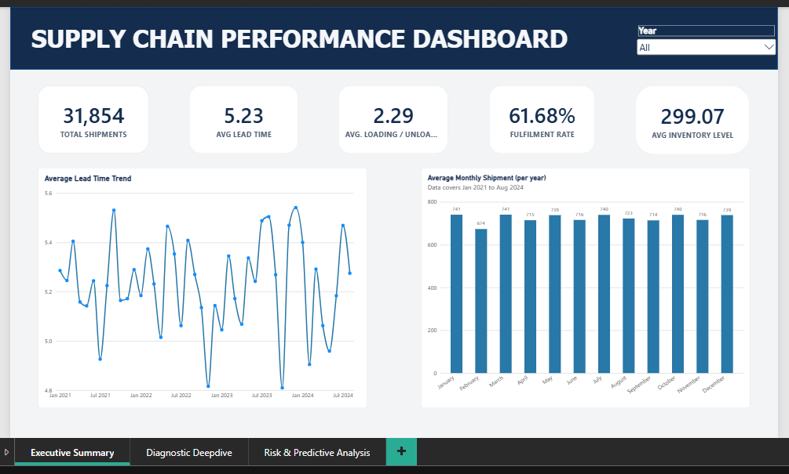
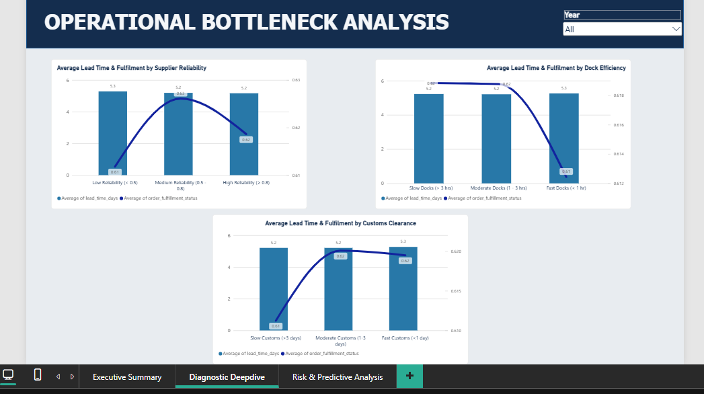
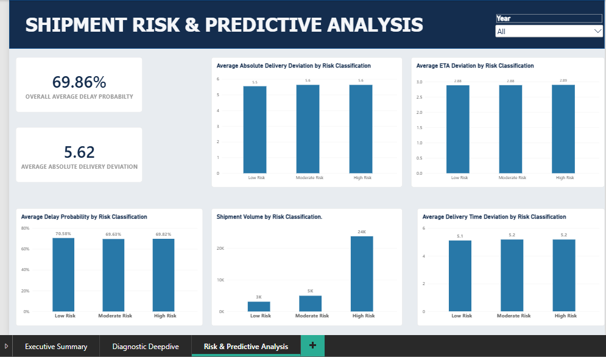
Project Overview
A 3-page dashboard on 31,872 shipment records (January 2021 to August 2024) that tests whether supplier reliability, dock efficiency, customs clearance time and risk classification actually explain delivery delays.
Key Findings
- Risk tiers do not predict delays: delay probability is about 70% in every risk class (Low 70.58%, Moderate 69.63%, High 69.82%).
- Operational tiers show no gap: average lead time stays at 5.2 to 5.3 days across all supplier reliability and dock efficiency tiers, and fulfilment stays between 61% and 63%.
- Over-classification: 75% of shipments (about 24K) are classed High Risk, so the classification cannot be used to prioritise shipments.
- Takeaway: none of these fields separates good shipments from bad ones. A real analysis would need other drivers such as route, carrier or order data.
E-commerce Marketing & Customer Analytics Dashboard
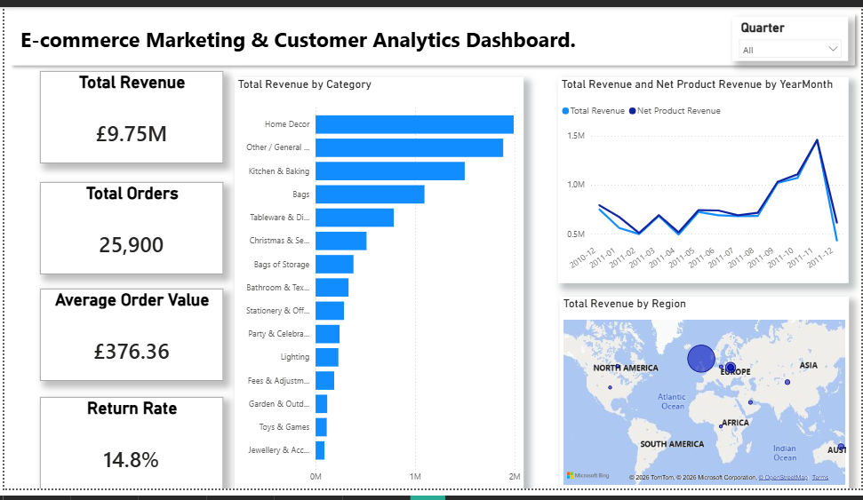
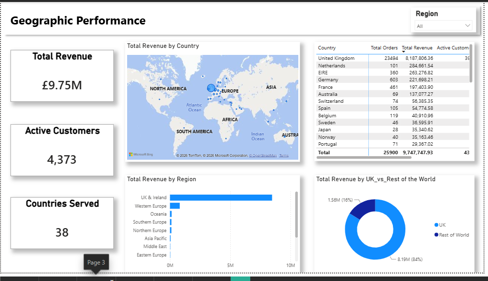
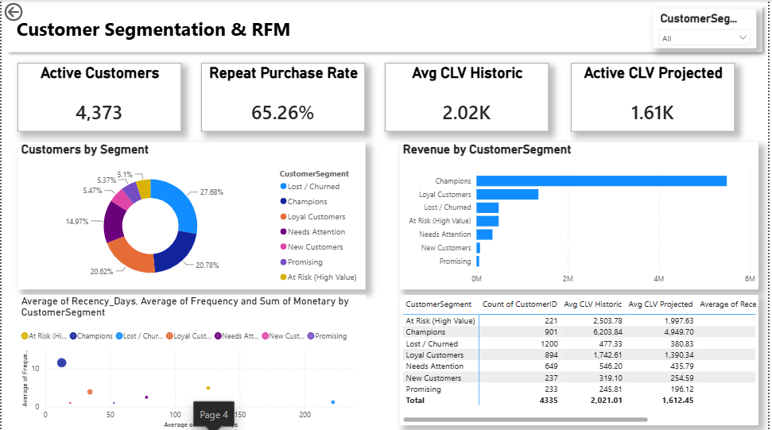
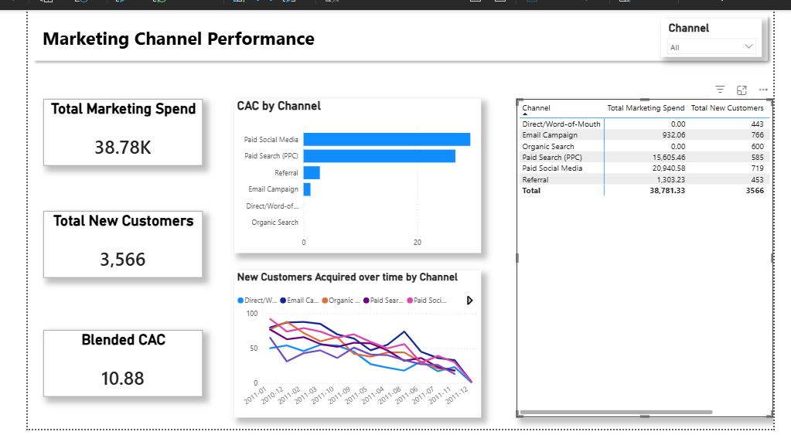
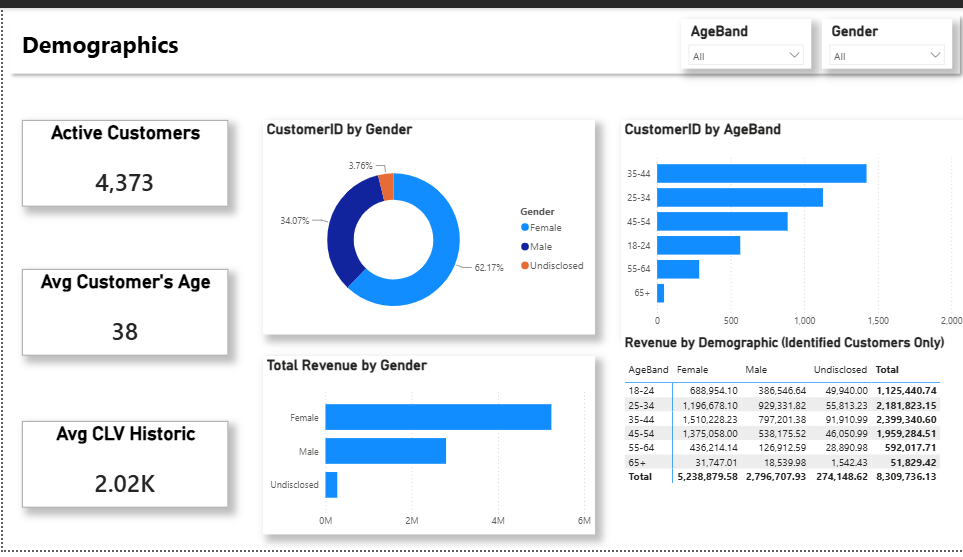
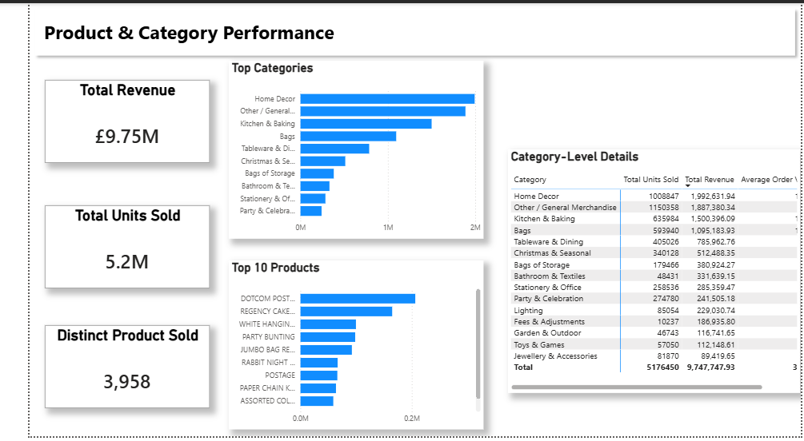
Project Overview
A 6-page dashboard on 541,909 retail transactions (December 2010 to December 2011) covering products, geography, customer segments, marketing channels and demographics.
Key Findings
- Products: Home Decor is the top category (£1.99M), followed by Other / General Merchandise (£1.89M) and Kitchen & Baking (£1.50M).
- Geography: the UK generates 84% of revenue (£8.19M); the rest of the world adds £1.56M across 38 countries.
- Customers: RFM scoring splits 4,335 customers into 7 segments. Champions are 21% of customers but about 64% of customer revenue, while 28% of customers are Lost / Churned.
- Marketing: spend of £38.78K acquired 3,566 new customers (blended acquisition cost £10.88). Paid social (about £29 per new customer) and paid search (about £27) cost many times more than referral (about £3) and email (about £1).
OPay User Demographics & Analytics Dashboard

Project Overview
Built an interactive dashboard analyzing 1.77 million individual user profiles from OPay Nigeria (spanning 2022 to May 2025). The dataset exceeded Excel’s 1.048M row limit, so the analysis moved to Power BI to process high-volume information, structure demographic slices and uncover regional trends.
Key Performance Indicators Managed
Core Visual & Dashboard Capabilities Implemented
- Temporal Trend Filters: Configured a Year Slicer (2022-2025) mapping steady linear transaction growth across groups, revealing recurring seasonal anomalies like a regular transaction dip every February.
- Geographic Slicing Engine: Established interactive maps covering 6 major Nigerian geopolitical zones showing that the South West serves as the primary adoption baseline (35%+ of user density).
- Demographic Segmentation: Generational clusters show that Millennials and Gen X lead active platform reliance, with Gen X keeping the highest densities of local business accounts.
- Data Quality Review: The gender split is exactly 50/50, one of several distribution patterns that point to synthetic data. Flagging this is part of the analysis, not a footnote.
COVID-19 Response Monitoring & Evaluation Analysis
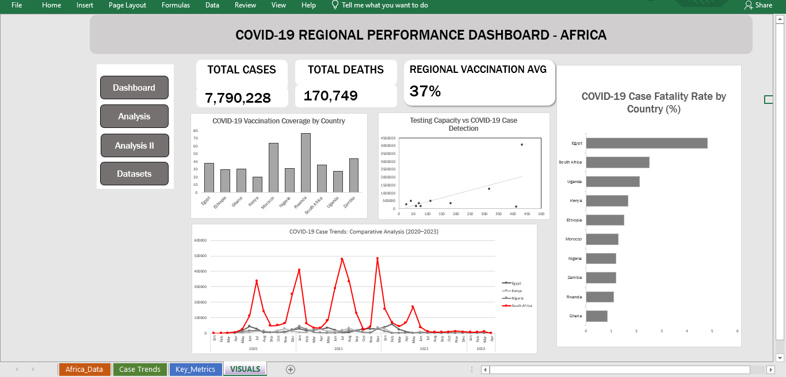
Project Overview
Applied a results-based monitoring framework to assess COVID-19 response effectiveness across 10 African countries, using 7.79M cases and 170,749 deaths from 2020 to 2023.
Key Findings
- A 56-percentage-point gap in vaccination coverage separates the best performer (Rwanda, 76%) from the weakest (Kenya, 20%).
- Resource allocation recommendations follow from that gap.
- An interactive Excel dashboard with 5 visualisation types covers comparative case fatality rates and testing capacity correlation, built for stakeholder reporting.
Nigerian Fintech Market: The 2026 Landscape
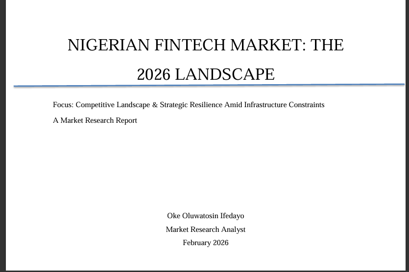
Project Overview
A 19-page strategic report on competitive dynamics, infrastructure challenges, regulatory evolution and investment opportunities in Nigeria’s fintech sector, built from 19 verified sources.
Key Insight
- Hybrid model infrastructure resilience emerged as the main competitive differentiator among the players analysed, an angle not prominently documented elsewhere.
🎬 Netflix Content Strategy & Growth Analysis

- Cleaned and engineered 8,800+ raw Netflix catalog titles in Python, resolving missing values and parsing custom date features.
- Calculated a custom DAX Release Lag measure demonstrating how Netflix shifted from legacy content licensing to fresh originals (reducing lag down to ~1–2 years).
- Designed an interactive executive dashboard visualizing global content distribution across major markets (US, UK, India, Japan, South Korea).